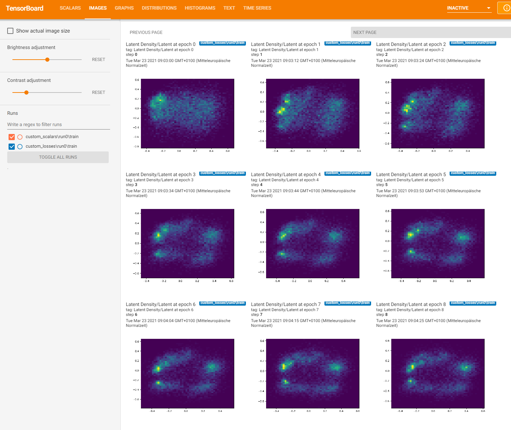

Writing Custom Loss Functions#
Run this notebook on Google Colab:

Find the documentation of EncoderMap:
https://ag-peter.github.io/encodermap
For Google colab only:#
If you’re on Google colab, please uncomment these lines and install EncoderMap.
[1]:
# !wget https://raw.githubusercontent.com/AG-Peter/encodermap/main/tutorials/install_encodermap_google_colab.sh
# !sudo bash install_encodermap_google_colab.sh
Primer#
In this tutorial we will learn how to write our own loss functions and add them to EncoderMap. Let us start with the imports:
[2]:
import numpy as np
import encodermap as em
import pandas as pd
import tensorflow as tf
---------------------------------------------------------------------------
ModuleNotFoundError Traceback (most recent call last)
Cell In[2], line 2
1 import numpy as np
----> 2 import encodermap as em
3 import pandas as pd
4 import tensorflow as tf
File /opt/hostedtoolcache/Python/3.9.16/x64/lib/python3.9/site-packages/encodermap/__init__.py:94
88 ################################################################################
89 # Imports
90 ################################################################################
93 from encodermap._version import __version__
---> 94 from encodermap.autoencoder.autoencoder import (
95 AngleDihedralCartesianEncoderMap,
96 Autoencoder,
97 EncoderMap,
98 )
99 from encodermap.callbacks.callbacks import EncoderMapBaseCallback
100 from encodermap.loading import features
ModuleNotFoundError: No module named 'encodermap.autoencoder'
Adding a unit circle loss#
To show how to implement loss functions we will replace EncoderMap’s center_cost with a loss that tries to push the low-dimensional points into a unit circle. For a unit circle the following equation holds true:
\begin{align} x^2 + y^2 &= 1\\ x^2 + y^2 - 1 &= 0 \end{align}
Let us first plot a unit circle with matplotlib.
[3]:
import matplotlib.pyplot as plt
%matplotlib inline
t = np.linspace(0,np.pi*2,100)
plt.close('all')
fig = plt.figure()
ax = fig.add_subplot(1, 1, 1, aspect='equal')
ax.plot(np.cos(t), np.sin(t), linewidth=1)
[3]:
[<matplotlib.lines.Line2D at 0x7f306a4b44f0>]
How to put this information into a loss function?
We need to find a function that describes the distance between any (x, y)-coordinate to the unit circle.
[4]:
def distance_to_unit_circle_2D(x, y):
return np.abs((np.square(x) + np.square(y)) - 1)
def distance_to_unit_circle(points):
return np.abs(np.sum(np.square(points), axis=0) - 1)
[5]:
xx = np.linspace(-2, 2, 250)
yy = np.linspace(-2, 2, 250)
grid = np.meshgrid(xx, yy)
z = distance_to_unit_circle(grid)
plt.close('all')
plt.contourf(xx, yy, z, levels=60)
[5]:
<matplotlib.contour.QuadContourSet at 0x7f30683b1f40>
Build a loss function from that:#
Cost functions in EncoderMap are almost always closures. Meaning they return a function and not a value. Let’s look at an example closure:
[6]:
def print_msg(msg):
# This is the outer enclosing function
# The variable msg is part of the function's name space
# This namespace is accesible by the nested function `printer`
def printer():
# This is the nested function
print(msg)
printer()
# We execute the function
# Output: Hello
print_msg("Hello")
Hello
The printer function was able to access the non-local variable msg. EncoderMap’s loss functions use the non-local variables model and parameters (often abbreviated to p).
We will also add tf.reduce_mean() to get the mean distance from the unit circle for all points, because a loss is always a scalar value.
[7]:
def circle_loss(model, parameters):
"""Circle loss outer function. Takes model and parameters. Parameters is only here for demonstration purpoes.
It is not actually needed in the closure.
"""
# use the models encoder part to create low-dimensional data
latent = model.encoder
def circle_loss_fn(y_true, y_pred=None):
"""Circle loss inner function. Takes y_true and y_pred. y_pred will not be used. y_true will be used to get
the latent space of the autoencoder.
"""
# get latent output
lowd = latent(y_true)
# get circle cost
circle_cost = tf.reduce_mean(tf.abs(tf.reduce_sum(tf.square(lowd), axis=0) - 1))
# bump up the cost to make it stronger than the other contributions
circle_cost *= 5
# write to tensorboard
tf.summary.scalar('Circle Cost', circle_cost)
# return circle cost
return circle_cost
# return inner function
return circle_loss_fn
Include the loss function in EncoderMap#
First: Let us load the dihedral data from ../notebooks_easy and define some Parameters. For the parameters we will set the center_cost_scale to be 0 as to not interfere with our new circle cost.
[8]:
df = pd.read_csv('/asp7.csv')
dihedrals = df.iloc[:,:-1].values.astype(np.float32)
cluster_ids = df.iloc[:,-1].values
print(dihedrals.shape, cluster_ids.shape)
print(df.shape)
---------------------------------------------------------------------------
NameError Traceback (most recent call last)
Cell In[8], line 1
----> 1 df = pd.read_csv('/asp7.csv')
2 dihedrals = df.iloc[:,:-1].values.astype(np.float32)
3 cluster_ids = df.iloc[:,-1].values
NameError: name 'pd' is not defined
[9]:
parameters = em.Parameters(
tensorboard=True,
center_cost_scale=0,
n_steps=100,
periodicity=2*np.pi,
main_path=em.misc.run_path('runs/custom_losses')
)
---------------------------------------------------------------------------
NameError Traceback (most recent call last)
Cell In[9], line 1
----> 1 parameters = em.Parameters(
2 tensorboard=True,
3 center_cost_scale=0,
4 n_steps=100,
5 periodicity=2*np.pi,
6 main_path=em.misc.run_path('runs/custom_losses')
7 )
NameError: name 'em' is not defined
Now we can instaniate the EncoderMap class. For visualization purposes we will also make tensorboard write images.
[10]:
e_map = em.EncoderMap(parameters, dihedrals)
e_map.add_images_to_tensorboard(dihedrals, image_step=1)
---------------------------------------------------------------------------
NameError Traceback (most recent call last)
Cell In[10], line 1
----> 1 e_map = em.EncoderMap(parameters, dihedrals)
2 e_map.add_images_to_tensorboard(dihedrals, image_step=1)
NameError: name 'em' is not defined
The loss is created by giving it the model and parameters of the parent EncoderMap instance. To not clash with the names of function and result we will call it _circle_loss.
[11]:
circle_loss_fn = circle_loss(e_map.model, e_map.p)
print(_circle_loss)
---------------------------------------------------------------------------
NameError Traceback (most recent call last)
Cell In[11], line 1
----> 1 circle_loss_fn = circle_loss(e_map.model, e_map.p)
2 print(_circle_loss)
NameError: name 'e_map' is not defined
Now we add this loss to EncoderMap’s losses
[12]:
print(e_map.loss)
e_map.loss.append(_circle_loss)
print(e_map.loss)
---------------------------------------------------------------------------
NameError Traceback (most recent call last)
Cell In[12], line 1
----> 1 print(e_map.loss)
2 e_map.loss.append(_circle_loss)
3 print(e_map.loss)
NameError: name 'e_map' is not defined
Train#
Also make sure to execute tensorboard in the correct directory:
$ tensorboard --logdir . --reload_multifile True
If you’re on Google colab, you can use tensorboard, by activating the tensorboard extension:
[13]:
# %load_ext tensorboard
# %tensorboard --logdir .
[14]:
e_map.train()
---------------------------------------------------------------------------
NameError Traceback (most recent call last)
Cell In[14], line 1
----> 1 e_map.train()
NameError: name 'e_map' is not defined
Output#
Here’s what Tensorboard should put out:

Conclusion#
Using the closure method, you can easily add new loss functions to EncoderMap.